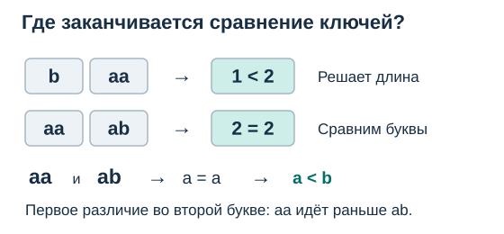

Сортировка и ключи
Как задать порядок по двум признакам
Упорядочим слова aa, b, ab, a по длине. Что делать с aa и ab? Их длины равны, поэтому добавим второе правило. Среди слов одной длины раньше идёт лексикографически меньшее. Для строчных латинских букв это обычный словарный порядок.
| Слово | Ключ (длина, слово) | Место в результате |
|---|---|---|
aa |
(2, "aa") |
3 |
b |
(1, "b") |
2 |
ab |
(2, "ab") |
4 |
a |
(1, "a") |
1 |

Как ключ меняет порядок слов
Сравни три правила на одних и тех же словах. При сортировке только по длине слова одинаковой длины сохраняют исходный порядок.
Введи от 1 до 10 слов из строчных латинских букв.
Длину объекта std::string можно узнать за постоянное время. Для двух слов равной длины приходится учитывать и содержимое памяти. Чем длиннее общий префикс, тем больше байтов может понадобиться проверить. Реализация иногда сравнивает сразу несколько байтов одной инструкцией.
Получается a, b, aa, ab. В примере используются буквы ASCII. В строке UTF-8 C++ считает байты, а Python при вычислении len считает кодовые точки Unicode. Для кириллицы эти величины уже различаются.
Как записать правило в коде
В Python передаём в параметр key функцию, которая строит для каждого слова пару из длины и самого слова. При сравнении пар сначала сравниваются длины. Если длины совпали, сравниваются слова. Функция sorted возвращает новый список.
В C++ функция сравнения (компаратор) отвечает на вопрос «Должно ли первое слово стоять раньше второго?». Для одинаковых слов ответ всегда false, поэтому в компараторе нужен знак <. Функция принимает вектор по значению, сортирует свою копию и возвращает её.
C++
#include <algorithm>
#include <string>
#include <vector>
using std::sort;
using std::string;
using std::vector;
vector<string> by_length(vector<string> words) {
sort(words.begin(), words.end(), [](const auto& left_word, const auto& right_word) {
if (left_word.size() != right_word.size()) return left_word.size() < right_word.size();
return left_word < right_word;
});
return words;
}
Тот же алгоритм на Python
def by_length(words):
return sorted(words, key=lambda word: (len(word), word))
Когда важен исходный порядок
При сортировке только по длине слова aa и ab имеют одинаковый ключ. Стабильная сортировка оставит их в том порядке, в котором они встретились на входе. В Python sorted стабильна. В C++ для такой задачи есть std::stable_sort.
Для std::sort верхняя оценка числа сравнений — O(n log n). Если одно сравнение слов длиной до L занимает O(L), общая верхняя оценка времени на сравнения — O(n log n · L).